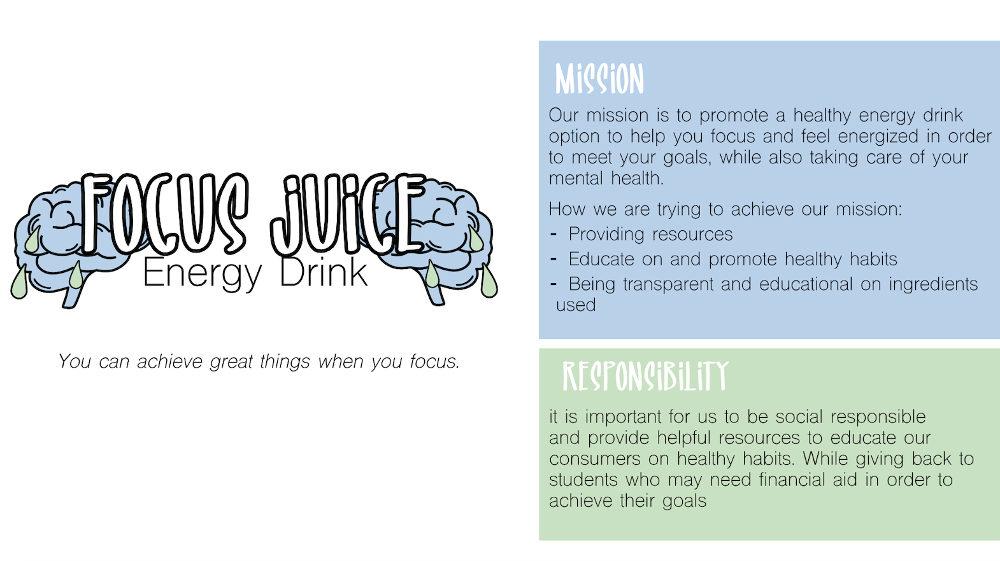
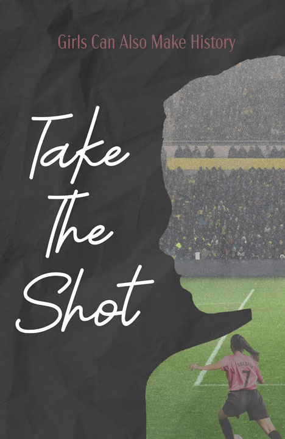
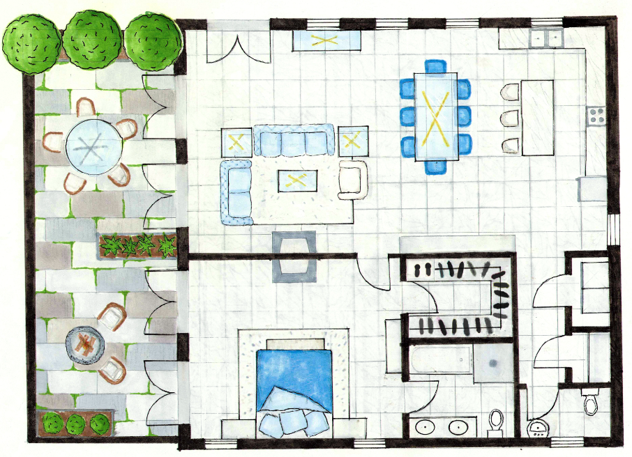
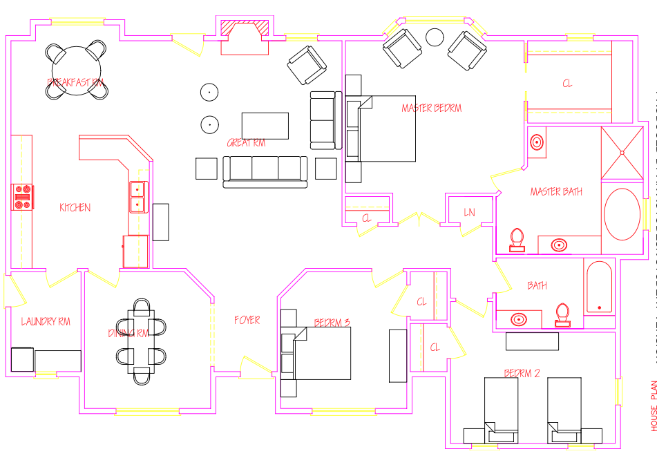

Community College Ad: In this assignment the goal was to make a persuasive ad to get students interested in community college or tradeschool. This assignment displays skills in editing, and layout.
Energy Drink: The purpose of this was to create a product and come up with a mission and purpose. In this project I was able to display my understanding on basic marketing, editing, logo making.
Soccer Motivation Poster: This project was for a photoshop class, where we had to create a motivational poster using different photo editing skills.
Travel Postcard: This was a fun project where we had to create a postcard for a travel destination and show ability of using layers correctly, background removal and color correcting. This project demonstrates my photoshop skills in layout, editing, and design.
Floorplan Design: project was for an interior design class where we had to create a floorplan for a condo, and render it using the proper techniques and symbols. This project demonstrates my skills in creating a functional a floorplan layout, as well as artistic rendering.
Floorplan Design 2: is another example of a floorplan design I created using AutoCAD. This project was to demonstrate my understanding of space management, scaling, furniture drafting and dimensioning. The floorplan shows the ability to create a functional layout for a home.